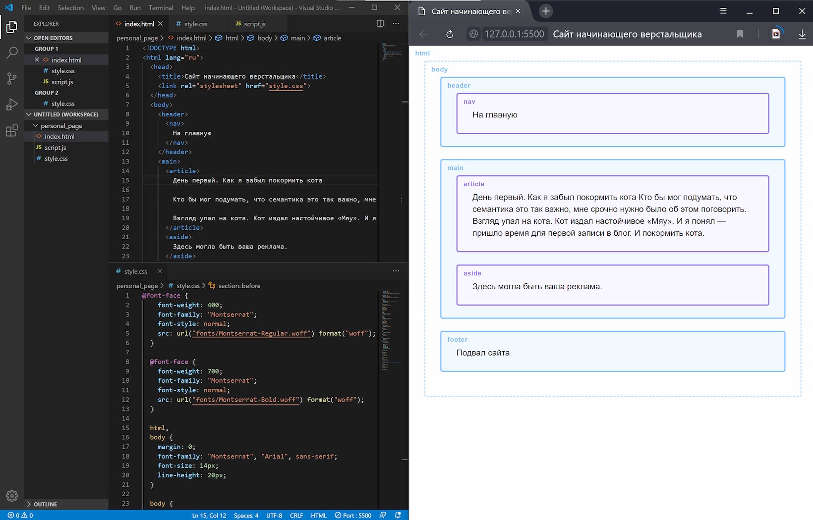

VS Code для вёрстки
Live Server для Visual Studio Code - это неотъемлемый компонент в арсенале современного веб-разработчика, предоставляющий возможность запуска локального сервера разработки с интегрированной функцией перезагрузки в реальном времени. Этот инструмент значительно упрощает и ускоряет процесс разработки веб-приложений, обеспечивая мгновенное отображение изменений как на статических, так и на динамических страницах.
Основные возможности Live Server Addon:
Автоматическая перезагрузка страницы. Одним из ключевых преимуществ этого аддона является автоматическая перезагрузка веб-страницы после внесения изменений в JavaScript-код, CSS и HTML-разметку. Это значит, что разработчик может сосредоточиться на написании кода, зная, что любые внесенные изменения будут мгновенно отражены на запущенном локальном сервере, без необходимости ручного обновления страницы
Поддержка динамических страниц. Live Server не ограничивается статическими страницами. Он легко справляется с динамическим контентом, обеспечивая бесперебойную работу даже при интенсивных изменениях в коде.
Удобное интегрирование в Visual Studio Code. Аддон интегрирован непосредственно в среду разработки Visual Studio Code, что позволяет использовать его функционал без необходимости установки дополнительных плагинов или приложений. Просто установите аддон и начните использовать его преимущества.
Поддержка различных языков и технологий. Live Server поддерживает не только JavaScript, CSS и HTML, но также работает с различными языками программирования и технологиями, что делает его универсальным инструментом для разработчиков с разными потребностями.
Контрольная панель разработчика. Для удобства разработчика, аддон предоставляет наглядную контрольную панель, где можно отслеживать статус сервера, логи изменений и многое другое.
В итоге, использование аддона Live Server для Visual Studio Code не только улучшает производительность разработчика, но и создает более комфортное и эффективное рабочее окружение, сокращая время между внесением изменений и просмотром результатов.
